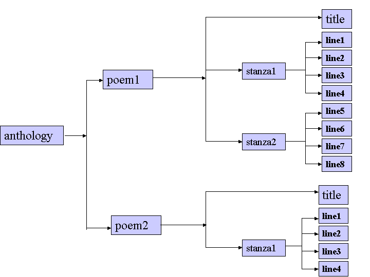

|
Text Encoding Initiative |
The XML Version of the TEI Guidelines2 A Gentle Introduction to XML |
Up: Contents Previous: 1 About These Guidelines Next: 3 Structure of the TEI Document Type Definition
|
2 A Gentle Introduction to XML 2.4 Validating a document's structure 2.9 Other components of an XML document Introductory Note (March 2002) 2 A Gentle Introduction to XML 3 Structure of the TEI Document Type Definition 4 Languages and Character Sets 6 Elements Available in All TEI Documents 14 Linking, Segmentation, and Alignment 17 Certainty and Responsibility 18 Transcription of Primary Sources 21 Graphs, Networks, and Trees 22 Tables, Formulae, and Graphics 29 Modifying and Customizing the TEI DTD 32 Algorithm for Recognizing Canonical References 38 Sample Tag Set Documentation 39 Formal Grammar for the TEI-Interchange-Format Subset of SGML |
As originally published in previous editions of the Guidelines, this chapter provided a gentle introduction to `just enough' SGML for anyone to understand how the TEI used that standard. Since then, the Gentle Guide seems to have taken on a life of its own independent of the Guidelines, having been widely distributed (and flatteringly imitated) on the web. In revising it for the present draft, the editors have therefore felt free to reduce considerably its discussion of SGML-specific matters, in favour of a simple presentation of how the TEI uses XML. The encoding scheme defined by these Guidelines may be formulated either as an application of the ISO Standard Generalized Markup Language (SGML)5 or of the more recently developed W3C Extensible Markup Language (XML)6. Both SGML and XML are widely-used for the definition of device-independent, system-independent methods of storing and processing texts in electronic form; XML being in fact a simplification or derivation of SGML. In the present chapter we introduce informally the basic concepts underlying such markup languages and attempt to explain to the reader encountering them for the first time how they are actually used in the TEI scheme. Except where the two are explicitly distinguished, references to XML in what follows may be understood to apply equally well to the TEI usage of SGML. For a more technical account of TEI practice see chapter 28 Conformance; for a more technical description of the subset of SGML used by the TEI encoding scheme, see chapter 39 Formal Grammar for the TEI-Interchange-Format Subset of SGML. XML is an extensible markup language used for the description of marked-up electronic text. More exactly, XML is a metalanguage, that is, a means of formally describing a language, in this case, a markup language. Historically, the word markup has been used to describe annotation or other marks within a text intended to instruct a compositor or typist how a particular passage should be printed or laid out. Examples include wavy underlining to indicate boldface, special symbols for passages to be omitted or printed in a particular font and so forth. As the formatting and printing of texts was automated, the term was extended to cover all sorts of special codes inserted into electronic texts to govern formatting, printing, or other processing. Generalizing from that sense, we define markup, or (synonymously) encoding, as any means of making explicit an interpretation of a text. Of course, all printed texts are implicitly encoded (or marked up) in this sense: punctuation marks, use of capitalization, disposition of letters around the page, even the spaces between words, might be regarded as a kind of markup, the function of which is to help the human reader determine where one word ends and another begins, or how to identify gross structural features such as headings or simple syntactic units such as dependent clauses or sentences. Encoding a text for computer processing is in principle, like transcribing a manuscript from scriptio continua,7 a process of making explicit what is conjectural or implicit, a process of directing the user as to how the content of the text should be (or has been) interpreted. By markup language we mean a set of markup conventions used together for encoding texts. A markup language must specify what markup is allowed, what markup is required, how markup is to be distinguished from text, and what the markup means. XML provides the means for doing the first three; documentation such as these Guidelines is required for the last. The present chapter attempts to give an informal introduction to those parts of XML of which a proper understanding is necessary to make best use of these Guidelines. The interested reader should also consult one or more of the dozens of excellent introductory text books or web sites now available on the subject. 2.1 What's special about XML?Three characteristics of XML seem to us to make it unlike other other markup languages:
These three aspects are discussed briefly below, and then in more depth in sections 2.3 XML structures and 2.7 Entities. The markup language with which XML is most frequently compared, however, is HTML, the language in which web pages had always been written until XML began to replace it. Compared with HTML, XML has some other important characteristics:
2.1.1 Descriptive markupIn a descriptive markup system, the markup codes used do little more than categorize parts of a document. Markup codes such as <para> or \end{list} simply identify a portion of a document and assert of it that ‘the following item is a paragraph,’ or ‘this is the end of the most recently begun list,’ etc. By contrast, a procedural markup system defines what processing is to be carried out at particular points in a document: ‘call procedure PARA with parameters 1, b and x here’ or ‘move the left margin 2 quads left, move the right margin 2 quads right, skip down one line, and go to the new left margin,’ etc. In XML, the instructions needed to process a document for some particular purpose (for example, to format it) are sharply distinguished from the descriptive markup which occurs within the document. They are collected outside the document in separate procedures or programs, and are usually expressed in a distinct document called a stylesheet, though it may do much more than simply define the rendition or visual appearance of a document.8 With descriptive instead of procedural markup the same document can readily be processed in many different ways, using only those parts of it which are considered relevant. For example, a content analysis program might disregard entirely the footnotes embedded in an annotated text, while a formatting program might extract and collect them all together for printing at the end of each chapter. Different kinds of processing can be carried out with the same part of a file. For example, one program might extract names of persons and places from a document to create an index or database, while another, operating on the same text, but using a different stylesheet, might print names of persons and places in a distinctive typeface. 2.1.2 Types of documentA second key aspect of XML is its notion of a document type: documents are regarded as having types, just as other objects processed by computers do. The type of a document is formally defined by its constituent parts and their structure. The definition of a `report', for example, might be that it consisted of a `title' and possibly an `author', followed by an `abstract' and a sequence of one or more `paragraphs'. Anything lacking a title, according to this formal definition, would not formally be a report, and neither would a sequence of paragraphs followed by an abstract, whatever other report-like characteristics these might have for the human reader. If documents are of known types, a special purpose program (called a parser), once provided with an unambiguous definition of a document's type, can check that any document claiming to be of a that type does in fact conform to the specification. A parser can check that all and only elements specified for a particular document type are present, that they are combined in appropriate ways, correctly ordered and so forth. More significantly, different documents of the same type can be processed in a uniform way. Programs can be written which take advantage of the knowledge encapsulated in the document structure information, and which can thus behave in a more `intelligent' fashion. 2.1.3 Data independenceA basic design goal of XML is to ensure that documents encoded according to its provisions can move from one hardware and software environment to another without loss of information. The two features discussed so far both address this requirement at an abstract level; the third feature addresses it at the level of the strings of data characters of which documents are composed. All XML documents, whatever language or writing system they employ, use the same underlying character encoding (that is, the same method of representing the graphic forms making up a particular writing system as binary data).9 This encoding is defined by an international standard,10 which is implemented by a universal character set maintained by an industry group called the Unicode Consortium, and known as Unicode;11 this provides a standardised way of representing any of the thousands of discrete symbols making up the world's writing systems, past and present. For technical and historical reasons which need not concern us, it is often necessary to translate texts encoded as Unicode into some smaller or less general encoding scheme. XML uses a general purpose string substitution mechanism for this purpose, inherited from SGML (which predates the availability of Unicode). In simple terms, this mechanism allows for the indirect representation of arbitrary parts of a document (be they single characters, character strings, or whole files) within it. One obvious application for this mechanism is to ensure consistency of nomenclature; another, more significant one, is to counter the notorious inability of different computer systems to understand each other's character sets, or of any one system to provide all the graphic characters needed for a particular application. The strings defined by this string-substitution mechanism are called entities and they are discussed below in section 2.7 Entities. 2.2 Textual structureA text is not an undifferentiated sequence of words, much less of bytes. For different purposes, it may be divided into many different units, of different types or sizes. A prose text such as this one might be divided into sections, chapters, paragraphs, and sentences. A verse text might be divided into cantos, stanzas, and lines. Once printed, sequences of prose and verse might be divided into volumes, gatherings, and pages. Structural units of this kind are most often used to identify specific locations or reference points within a text (‘the third sentence of the second paragraph in chapter ten’; ‘canto 10, line 1234’; ‘page 412,’ etc.) but they may also be used to subdivide a text into meaningful fragments for analytic purposes (‘is the average sentence length of section 2 different from that of section 5?’ ‘how many paragraphs separate each occurrence of the word ‘nature’?’ ‘how many pages?’). Other structural units are more clearly analytic, in that they characterize a section of a text. A dramatic text might regard each speech by a different character as a unit of one kind, and stage directions or pieces of action as units of another kind. Such an analysis is less useful for locating parts of the text (‘the 93rd speech by Horatio in Act 2’) than for facilitating comparisons between the words used by one character and those of another, or those used by the same character at different points of the play. In a prose text one might similarly wish to regard as units of different types passages in direct or indirect speech, passages employing different stylistic registers (narrative, polemic, commentary, argument, etc.), passages of different authorship and so forth. And for certain types of analysis (most notably textual criticism) the physical appearance of one particular printed or manuscript source may be of importance: paradoxically, one may wish to use descriptive markup to describe presentational features such as typeface, line breaks, use of whitespace and so forth. These textual structures overlap with each other in complex and unpredictable ways. Particularly when dealing with texts as instantiated by paper technology, the reader needs to be aware of both the physical organization of the book and the logical structure of the work it contains. Many great works (Sterne's Tristram Shandy for example) cannot be fully appreciated without an awareness of the interplay between narrative units (such as chapters or paragraphs) and page divisions. For many types of research, it is the interplay between different levels of analysis which is crucial: the extent to which syntactic structure and narrative structure mesh, or fail to mesh, for example, or the extent to which phonological structures reflect morphology. 2.3 XML structuresThis section describes the simple and consistent mechanism for the markup or identification of textual structure provided by XML. It also describes the methods XML provides for the expression of rules defining how units of textual structure can meaningfully be combined in a text. 2.3.1 ElementsThe technical term used in XML for a textual unit, viewed as a structural component, is element. Different types of elements are given different names, but XML provides no way of expressing the meaning of a particular type of element, other than its relationship to other element types. That is, all one can say about an element called (for instance) <blort> is that instances of it may (or may not) occur within elements of type <farble>, and that it may (or may not) be decomposed into elements of type <blortette>. It should be stressed that XML is entirely unconcerned with the semantics of textual elements: these are application dependent. It is up to the creators of XML vocabularies (such as these Guidelines) to choose intelligible names for the elements they identify and to define their proper use in text markup. That is the chief purpose of documents such as the TEI Guidelines. From the need to choose element names indicative of function comes the technical term for the name of an element type, which is generic identifier, or GI. Within a marked up text (a document instance), each element must be explicitly marked or tagged in some way. This is done by inserting a tag at the beginning of the element (a start-tag) and another at its end (an end-tag).12 The start- and end-tag pair are used to bracket off the element occurrences within the running text, in rather the same way as different types of parentheses or quotation marks are used in conventional punctuation. For example, a quotation element in a text might be tagged as follows: ... Rosalind's remarks <quote>This is the silliest stuff that ere I heard of!</quote> clearly indicate ...As this example shows, a start-tag takes the form <quote>, where the opening angle bracket indicates the start of the start-tag, ‘quote’ is the generic identifier of the element which is being delimited, and the closing angle bracket indicates the end of a tag. An end-tag takes an identical form, except that the opening angle bracket is followed by a solidus (slash) character, so that the corresponding end-tag is </quote>.13 2.3.2 Content models: an exampleAn element may be empty, that is, it may have no content at all, or it may contain just a sequence of characters with no other elements. More usually, however, elements of one type will be embedded (contained entirely) within elements of a different type. To illustrate this, we will consider a very simple structural model. Let us assume that we wish to identify within an anthology only poems, their titles, and the stanzas and lines of which they are composed. In XML terms, our document type is the anthology, and it consists of a series of poems. Each poem has embedded within it one element, a title, and several occurrences of another, a stanza, each stanza having embedded within it a number of line elements. Fully marked up, a text conforming to this model might appear as follows:14 <anthology>
<poem><title>The SICK ROSE</title>
<stanza>
<line>O Rose thou art sick.</line>
<line>The invisible worm,</line>
<line>That flies in the night</line>
<line>In the howling storm:</line>
</stanza>
<stanza>
<line>Has found out thy bed</line>
<line>Of crimson joy:</line>
<line>And his dark secret love</line>
<line>Does thy life destroy.</line>
</stanza>
</poem>
<!-- more poems go here -->
</anthology>
It should be stressed that this example does not use the same names as are proposed for corresponding elements elsewhere in these Guidelines: the above is not a valid TEI document. It will however serve as an introduction to the basic notions of XML. Whitespace and line breaks have been added to the example for the sake of visual clarity only; they have no particular significance in the XML encoding itself. Also, the line <!-- more poems go here -->is an XML comment and is not treated as part of the text. As it stands, the above example is what is known as a well-formed XML document: to achieve this status, an XML document must obey the following simple rules:
An XML document which is well-formed can be processed in a number of useful ways. A simple indexing program could extract only the relevant text elements in order to make a list of titles, first lines, or words used in the poem text; a simple formatting program could insert blank lines between stanzas, perhaps indenting the first line of each, or inserting a stanza number. Different parts of each poem could be typeset in different ways. A more ambitious analytic program could relate the use of punctuation marks to stanzaic and metrical divisions.16 Scholars wishing to see the implications of changing the stanza or line divisions chosen by the editor of this poem can do so simply by altering the position of the tags. And of course, the text as presented above can be transported from one computer to another and processed by any program (or person) capable of making sense of the tags embedded within it with no need for the sort of transformations and translations needed to move word processor files around. However, well-formedness alone is not enough for the full range of what might be useful in marking up a document. It might well be useful if, in the process of preparing our digital anthology, a computer system could check some basic rules about how stanzas, lines, and titles can sensibly co-occur in a document. It would be even more useful if the system could check that stanzas are always labelled <stanza> and not occasionally <canto> or <Stanza>. An XML document in which such rules have been checked is technically known as a valid document, and the ability to perform such validation is one of the key advantages of using XML. To carry this out, some way of formally stating the criteria for successful validation is necessary: in XML this formal statement may be provided by an additional document known as a document type declaration (DTD) or by an XML schema.17 2.4 Validating a document's structureRules such as those informally stated above are the first stage in the creation of a formal specification for the structure of an XML document, or document type declaration, usually abbreviated to DTD. In creating a DTD, the document designer may be as lax or as restrictive as the occasion warrants. A balance must be struck between the convenience of following simple rules and the complexity of handling real texts. This is particularly the case when the rules being defined relate to texts which already exist: the designer may have only the haziest of notions as to an ancient text's original purpose or meaning and hence find it very difficult to specify consistent rules about its structure. On the other hand, where a new text is being prepared to an exact specification, for example for entry into a textual database of some kind, the more precisely stated the rules, the better they can be enforced. Even in the case where an existing text is being marked up, it may be beneficial to define a restrictive set of rules relating to one particular view or hypothesis about the text – if only as a means of testing the usefulness of that view or hypothesis. It is important to remember that every document type declaration results from an interpretation of a text. There is no single DTD which encompasses any kind of absolute truth about a text, although it may be convenient to privilege some DTDs above others for particular types of analysis. XML is widely used in environments where uniformity of document structure is a major desideratum. In the production of technical documentation, for example, it is of major importance that sections and subsections should be properly nested, that cross references should be properly resolved and so forth. In such situations, documents are seen as raw material to match against pre-defined sets of rules. As discussed above, however, the use of simple rules can also greatly simplify the task of tagging accurately elements of less rigidly constrained texts. By making these rules explicit, the scholar reduces his or her own burdens in marking up and verifying the electronic text, while also being forced to make explicit an interpretation of the structure and significant particularities of the text being encoded. 2.4.1 An example DTDA DTD is expressed as a set of declarative statements, using a special purpose syntax which we introduce informally below. For our simple model of a poem, the following declarations would be appropriate: <!ELEMENT anthology (poem+)> <!ELEMENT poem (title?, stanza+)> <!ELEMENT title (#PCDATA) > <!ELEMENT stanza (line+) > <!ELEMENT line (#PCDATA) >These five lines are examples of formal XML element declarations. A declaration, like an element, is delimited by angle brackets; the first character following the opening bracket must be an exclamation mark, followed immediately by one of a small set of XML-defined keywords, specifying the kind of object being declared. The five declarations above are all of the same type: each begins with an ELEMENT keyword, indicating that it declares an element, in the technical sense defined above. Each consists of two parts: a name, or generic identifier and a content model.18 Each of these parts is discussed further below. Components of the declaration are separated by whitespace characters, that is one or more blanks, tabs or newlines. 2.4.2 Generic identifierThe first part of each declaration above gives the generic identifier (often abbreviated to GI) of the element which is being declared, for example ‘poem’, ‘title’, etc. A GI may contain alphabetic characters, digits, hyphens, underscore characters, or fullstops, and must begin with a letter. In general, uppercase and lowercase letters are regarded as distinct characters: an element with the GI <foo> is not the same as an element with the GI <Foo>: the root element of a TEI-conformant document is thus <TEI.2>, not <tei.2>.19 2.4.3 Content modelThe second part of each declaration, enclosed in parentheses, is called the content model of the element being defined, because it specifies what may legitimately be contained within it. Contents are specified either in terms of other elements or using special reserved words. There are several such reserved words, of which by far the most commonly encountered is #PCDATA, as in this example. This is an abbreviation for parsed character data, and it means that the element being defined may contain any valid character data (but no elements). If an XML declaration is thought of as a structure like a family tree, with a single ancestor at the top (in our case, this would be <anthology>), then almost always, following the branches of the tree downwards (for example, from <anthology> to <poem> to <stanza> to <line> and <title>) will lead eventually to #PCDATA. In our example, <title> and <line> are so defined, since their content models say #PCDATA only and name no embedded elements. 2.4.4 Occurrence indicatorsThe declaration for <stanza> in the example above states that a stanza consists of one or more lines. It uses an occurrence indicator (the plus sign) to indicate how many times the element named in its content model may occur. There are three occurrence indicators: the plus sign, the question mark, and the asterisk or star. The plus sign means that there may be one or more occurrences of the element concerned; the question mark means that there may be at most one and possibly no occurrence; the star means that the element concerned may either be absent or appear one or more times. Thus, if the content model for <stanza> were (line*), stanzas with no lines would be possible as well as those with more than one line. If it were (line?), again empty stanzas would be countenanced, but no stanza could have more than a single line. The declaration for <poem> in the example above thus states that a <poem> cannot have more than one title, but may have none, and that it must have at least one <stanza> and may have several. 2.4.5 ConnectorsThe content model (title?, stanza+) contains more than one component, and thus needs additionally to specify the order in which these elements (<title> and <stanza>) may appear. This ordering is determined by the connector (the comma) used between its components. There are two possible connectors: the comma, representing sequence, and the vertical bar, representing alternation.20 If the comma in this example were replaced by a vertical bar, then a <poem> would consist of either a title or just stanzas – but not both! 2.4.6 Model groupsIn our example so far, the components of each content model have been either single elements or #PCDATA. It is quite permissible however to define content models in which the components are lists of elements, combined by connectors. Such lists, known as model groups, may also be modified by occurrence indicators and themselves combined by connectors. To demonstrate these facilities, let us now expand our example to include non-stanzaic types of verse. For the sake of demonstration, we will categorize poems as one of stanzaic, couplets, or blank (or stichic). A blank-verse poem consists simply of lines (we ignore the possibility of verse paragraphs for the moment)21 so no additional elements need be defined for it. A couplet is defined as a <firstLine> followed by a <secondLine>. <!ELEMENT couplet (firstLine, secondLine) > The elements <firstLine> and <secondLine> (which are distinguished to enable studies of rhyme scheme, for example) have exactly the same content model as the existing <line> element;22 we will therefore add the following two lines to our example DTD: <!ELEMENT firstLine (#PCDATA)> <!ELEMENT secondLine (#PCDATA)>Next, we can change the declaration for the <poem> element to include all three possibilities: <!ELEMENT poem (title?, (stanza+ | couplet+ | line+) ) >That is, a poem consists of an optional title, followed by one or several stanzas, or one or several couplets, or one or several lines. Note the difference between this declaration and the following: <!ELEMENT poem (title?, (stanza | couplet | line)+ ) >The second version, by applying the occurrence indicator to the group rather than to each element within it, would allow for a single poem to contain a mixture of stanzas, couplets, or lines. A model group can contain #PCDATA as well as named elements: this combination, known as mixed content, allows for elements in which the sub-components appear with intervening stretches of character data. For example, if we wished to mark place names wherever they appear inside our verse lines, then, assuming we have also added a suitable declaration for the <name> element, we could change the definition for <line> to <!ELEMENT line (#PCDATA | name )* > XML (but not SGML) places several constraints on the way that mixed content models may be defined. In brief, if #PCDATA appears with other elements in a content model: it must always appear as the first option in an alternation; it may appear once only, and in the outermost model group; and if the group containing it is repeated, the star operator must be used.23 Quite complex models can easily be built up in this way, to match the structural complexity of many types of text. As a further example, consider the case of stanzaic verse in which a refrain or chorus appears. Like a stanza, a refrain consists of repetitions of the line element. A refrain can appear at the start of a poem only, or as an optional addition following each stanza. This could be expressed by a content model such as the following: <!ELEMENT refrain (line+)> <!ELEMENT poem (title?, ( line+ | (refrain?, (stanza, refrain?)+ ))) >That is, a poem consists of an optional title, followed by either a sequence of lines, or an un-named group, which starts with an optional refrain, followed by one of more occurrences of another group, each member of which is composed of a stanza followed by an optional refrain. A sequence such as ‘refrain - stanza - stanza - refrain’ follows this pattern, as does the sequence ‘stanza - refrain - stanza - refrain’. The sequence ‘refrain - refrain - stanza - stanza’ does not, however, and neither does the sequence ‘stanza - refrain - refrain - stanza.’ Among other conditions made explicit by this content model are the requirements that at least one stanza must appear in a poem, if it is not composed simply of lines, and that if there is both a title and a stanza they must appear in that order. Note that the apparent complexity of this model derives from the constraints expressed informally above. A simpler model, such as <!ELEMENT poem (title?, (line|refrain|stanza)+ ) >would not enforce any of them, and would therefore permit such anomalies as a poem consisting only of refrains, or an arbitrary mixture of lines and refrains. 2.5 Complicating the issue
In the simple cases described so far, it has been assumed that one
can identify the immediate constituents of every element in a
textual structure. A poem consists of stanzas, and an anthology
consists of poems. Stanzas do not float around unattached to poems or
combined into some other unrelated element; a poem cannot contain an
anthology. All the elements of a given document type may be arranged
into a hierarchic structure, arranged like a family tree with a single
ancestor at one end and many children (mostly the elements containing
#PCDATA) at the other. For example, we could represent an anthology
containing two poems, the first of which contains two four-line
stanzas and the second a single stanza, by a tree structure like the following figure:
 Clearly, there are many such trees that might be drawn to describe the structure of this or other anthologies. Some of them might be representable as further subdivisions of this tree: for example, we might subdivide the lines into individual words, since no word crosses a line boundary. Surprisingly perhaps, this grossly simplified view of what text is (memorably termed an ordered hierarchy of content objects (OHCO) view of text by Renear et al)24 turns out to be very effective for a large number of purposes. It is not however adequate for the full complexity of real textual structures, for which more complex mechanisms need to be employed. For there are many other trees that might be drawn which do not fit within this tree. We might, for example, be interested in syntactic structures — which rarely respect the formal boundaries of verse. Or, to take a simpler example, we might want to represent the pagination of different editions of the same text. In the OHCO model of text, representation of cases where different elements overlap so that several different trees may be identified in the same document, is generally problematic. A single hierarchy must be chosen, and the points at which other hierarchies intersect with it marked (so we might, for example, mark the pagination by means of empty elements marking the boundary between one page and the next). Or we could represent alternative hierarchies by means of the pointing and linking mechanisms described in chapter 14 Linking, Segmentation, and Alignment. These mechanisms all depend on the use of attributes which may be used both to identify particular elements within a document, and to point to, link, or align them into arbitrary structures.25 2.6 AttributesIn the XML context, the word ‘attribute’, like some other words, has a specific technical sense. It is used to describe information which is in some sense descriptive of a specific element occurrence but not regarded as part of its content. For example, you might wish to add a status attribute to occurrences of some elements in a document to indicate their degree of reliability, or to add an identifier attribute so that you could refer to particular element occurrences from elsewhere within a document. Attributes are useful in precisely such circumstances. Although different elements may have attributes with the same name, (for example, in the TEI scheme, every element is defined as having an attribute named lang), they are always regarded as different, and may have different values assigned to them. If an element has been defined as having attributes, the attribute values are supplied in the document instance as attribute-value pairs inside the start-tag for the element occurrence. An end-tag may not contain an attribute-value specification, since it would be redundant. The order in which attribute-value pairs are supplied inside a tag has no significance; they must however be separated by at least one whitespace (blank, newline, or tab) character. In XML, the value part must always be given inside matching quotation marks, either single or double.26 <poem id='P1' status="draft"> ... </poem>Here attribute values are being specified for two attributes previously declared for the <poem> element: id and status. For the instance of a <poem> in this example, represented here by an ellipsis, the id attribute has the value P1 and the status attribute has the value draft. An XML processor can use the values of the attributes in any way it chooses; for example, a formatter might print a poem element which has the status attribute set to draft in a different way from one with the same attribute set to revised; another processor might use the same attribute to determine whether or not poem elements are to be processed at all. The id attribute is a slightly special case in that, by convention, it is always used to supply a unique value to identify a particular element occurrence, which may be used for cross reference purposes, as discussed further below. 2.6.1 Declaring attributesLike elements, attributes are declared in the XML DTD, using rather similar syntax. As well as specifying its name and the element to which it is to be attached, it is possible to specify (within limits) what kind of value is acceptable for an attribute and a default value. The following declarations could be used to define the two attributes we have supplied above for the <poem> element: <!ATTLIST poem
id ID #IMPLIED
status (draft | revised | published) "draft" >
The declaration begins with the symbol ATTLIST, which introduces an attribute list specification. This first specifies the element concerned, poem in this example.27 Following this name is a series of rows, one for each attribute being declared, each containing three parts.28 These specify the name of the attribute, the type of value it takes, and a default value respectively. 2.6.2 Attribute namesAttribute names (id and status in this example) are subject to the same restrictions as other names in XML; they need not be unique across the whole DTD, however, but only within the list of attributes for a given element. 2.6.3 Attribute valuesThe second part of an attribute specification can take one of two forms, both illustrated above. The first case uses one of a number of special keywords to declare what kind of value an attribute may take. In the example above, the special keyword ID is used to indicate that the attribute id will be used to supply a unique identifying value for each poem instance (see further the discussion in 2.6.5 ID and IDREF attributes below). Possible keywords include:
In the example above, a list of the possible values for the status attribute has been supplied. This means that a parser can check that no <poem> is defined for which the status attribute does not have one of draft, revised, or published as its value. Alternatively, a parser would have accepted almost any unbroken string of characters (status="awful", status="awe-ful", or status="12345678") if it had been a NMTOKEN; or almost any string at all (status="anything goes" or status = "well, ALMOST anything") if it were CDATA. Sometimes, of course, the set of possible values cannot be pre-defined. Where it can, as in this case, it is generally better to do so. 2.6.4 Default valueThe last piece of information in each attribute declaration specifies how a parser should interpret the absence of the attribute concerned. This can be done by supplying one of the special keywords listed below, or (as in this case) by supplying a specific value which is then regarded as the value for every element which does not supply a value for the attribute concerned. Using the example above, if a poem is simply tagged <poem>, the parser will treat it exactly as if it were tagged <poem status="draft">. Alternatively, one of the following keywords may be used to specify a default value for an attribute:
Thus, if the attribute declaration above were rewritten as
<!ATTLIST poem id ID #IMPLIED
status (draft | revised | published) #REQUIRED >
then poems which appear in the anthology simply tagged <poem>
would be reported as erroneously tagged, as would any for which some
value other than draft, published, or
revised were supplied.
2.6.5 ID and IDREF attributesIt is sometimes necessary to refer to an occurrence of one textual element from within another, an obvious example being phrases such as ‘see note 6’ or ‘as discussed in chapter 5.’ When a text is being produced the actual numbers associated with the notes or chapters may not be certain. If we are using descriptive markup, such things as page or chapter numbers, being entirely matters of presentation, will not in any case be present in the marked up text: they will be assigned by whatever processor is operating on the text (and may indeed differ in different applications). XML therefore provides a special mechanism by which any element occurrence may be given a special identifier, a kind of label, which may be used to refer to it from anywhere else within the same text. The cross-reference itself is regarded as an element occurrence of a specific kind, which must also be declared in the DTD. In each case, the identifying label (which may be arbitrary) is supplied as the value of a special attribute. Suppose, for example, we wish to include a reference within the notes on one poem that refers to another poem. We will first need to provide some way of attaching a label to each poem: this is done by defining an attribute for the <poem> element, as suggested above. <!ATTLIST poem
id ID #IMPLIED >
Here we define an attribute id, the value of which must be of type ID. It is not required that any attribute of type ID have the name id as well; it is however a useful convention almost universally observed. Note that not every poem need carry an id attribute and the parser may safely ignore the lack of one in those which do not. Only poems to which we intend to refer need use this attribute; for each such poem we should now include in its start-tag some unique identifier, for example: <poem id='ROSE'>
<!-- Text of poem with identifier 'ROSE' -->
</poem>
<poem id='P40'>
<!-- Text of poem with identifier 'P40' -->
</poem>
<poem>
<!-- This poem has no identifier -->
</poem>
Next we need to define a new element for the cross reference itself. This will not have any content – it is only a pointer – but it has an attribute, the value of which will be the identifier of the element pointed at. This is achieved by the following declarations: <!ELEMENT poemRef EMPTY > <!ATTLIST poemRef target IDREF #REQUIRED > The <poemRef> element has the special content model EMPTY because it has no content. It has a single attribute called target. The value of this attribute must be of type IDREF (the keyword used for cross reference pointers of this type); furthermore, because the default value is #REQUIRED, it must be supplied on each occurrence — a <poemRef> with no referent is an impossibility. With these declarations in force, we can now encode a reference to the poem whose id attribute specifies that its identifier is Rose as follows: Blake's poem on the sick rose <poemRef target='Rose'/> ...In this example, we have used the special syntax defined by XML for representing empty elements in which the end-tag and the start-tag are combined into a single tag.29 When an XML parser encounters this empty element it will simply check that an element exists with the identifier Rose. Different XML processors could take any number of additional actions: a formatter might construct an exact page and line reference for the location of the poem in the current document and insert it, or just quote the poem's title or first lines. A hypertext style processor might use this element as a signal to activate a link to the poem being referred to. The purpose of the XML markup is simply to indicate that a cross reference exists: it does not determine what the processor is to do with it. 2.7 EntitiesThe aspects of XML discussed so far are all concerned with the markup of structural elements within a document. XML also provides a simple and flexible method of encoding and naming arbitrary parts of the actual content of a document in a portable way. In XML the word entity has a special sense: it means a named part of a marked up document, irrespective of any structural considerations. An entity might be a string of characters or a whole file of text. Entities are declared in a DTD in the same way as elements or attributes, and they are included in a document using a construction known as an entity reference. 2.7.1 Entity declarationsLike all other declarations, an entity declaration begins with a special keyword, in this case the word ENTITY, followed by the name of the entity to be declared, and the value to be used when it is referenced in the document. For example, the following declaration <!ENTITY tei "Text Encoding Initiative">defines an entity whose name is tei and whose value is the string Text Encoding Initiative. This is an instance of an entity declaration, which declares an internal entity. The following declaration, by contrast, declares an external entity (sometimes called, loosely, a system entity): <!ENTITY ChapTwo SYSTEM "p4chap2.xml">This defines an external entity whose name is ChapTwo and whose value is the text associated with the system identifier — in this case, the system identifier is the name of an operating system file and the replacement text of the entity is the contents of the file. However, XML does not require system identifiers to be operating-system file names.30 We might define the same entity as referring to a web page: <!ENTITY ChapTwo SYSTEM "http://www.tei-c.org/P4X/p4chap2.xml"> System identifiers are, by their nature, system dependent; in the interests of data portability, therefore, XML provides another way of declaring external entities, shown here: <!ENTITY p3.sg PUBLIC "-//TEI//TEXT Guidelines Chapter on XML//EN" "p4chap2.xml">Here, the keyword SYSTEM has been replaced by the keyword PUBLIC, and the system identifier has been preceded by a special string known as a formal public identifier. Although public identifiers can (in principle) take virtually any form; it is usual to use the form shown above, in which the delimiters ‘//’ divide the identifier into the following parts:
Public identifiers help make XML documents less dependent on particular computer systems, by making it possible to confine the mapping between entity names and system identifiers to a single place. As with other such techniques, they require XML systems to provide mechanisms for mapping from the public identifiers to file identifiers or other system identifiers: such a mapping is typically provided by an additional component known as a catalog file (2.10.4 Ancillary Files). 2.7.2 Entity referencesOnce an entity has been declared it may be referenced anywhere within a document. This is done by supplying its name prefixed with the ampersand character and followed by the semicolon.31 When an XML parser encounters such an entity reference, it immediately substitutes the value declared for the entity name. Thus, the passage The work of the &tei; has only just begun will be interpreted by an XML processor exactly as if it read The work of the Text Encoding Initiative has only just begun. In the case of an external entity, it is, of course, the contents of the operating system file which are substituted, so that the passage The following text has been suppressed: &ChapTwo; will be expanded to include the whole of whatever the system finds in the file p4chap2.xml. This obviously saves typing, and simplifies the task of maintaining consistency in a set of documents. If the printing of a complex document is to be done at many sites, the document body itself might use an entity reference, such as &site;, wherever the name of the site is required. Different entity declarations could then be used at different sites to supply the appropriate string to be substituted for this name, with no need to change the text of the document itself. In XML documents, two special entities are predefined, with the names amp and lt. These are available without declaration, so that the ampersand character or less-than sign can be represented in a text without their being confused with the start of an entity reference or a tag respectively. 2.7.3 Character referencesAs mentioned above, XML documents all use the same internal character encoding. Since not all computer systems currently support this encoding directly, a special form of entity reference is defined which can be used to represent individual characters from the Unicode character set in a portable way by simply representing their numeric value, in decimal or hexadecimal notation. For example, the character é is represented within an XML document as the Unicode character with hexadecimal value 00E9. If such a document is being prepared on (or exported to) a system using a different character set, say ISO 646, in which this character is not available, it may instead be represented by the character entity reference é (the x indicating that what follows is a hexadecimal value) or é. Entity references of this type do not need to be predefined in XML, since the underlying character encoding for XML is always the same. To aid legibility however, it is common practice instead to use a mnemonic name (such as eacute) for such character references, and to map these to the appropriate Unicode value by means of entity declarations of exactly the same type as those already discussed. Standard mnemonic names have been defined by ISO for the characters in most widely-used writing systems, and grouped together into widely-available entity sets. The standard `ISO lat1' entity set, for example, includes a declaration like the following for the character é: <!ENTITY eacute "é"> <!-- LATIN SMALL LETTER E WITH ACUTE -->so that, for an XML document which embeds this entity set in its DTD, a non-Unicode enabled input system may also represent this character by the entity reference é. This string substitution mechanism has many other applications. Suppose, for example, that we wish to encode the use of ligatures in early printed texts. The ligatured form of ‘ct’ might be distinguished from the non-ligatured form by encoding it as &ctlig; rather than ct. Other special typographic features such as leafstops or rules could equally well be represented by mnemonic entity references in the text. When processing such texts, an entity declaration would be added giving the desired representation for such textual elements. If, for example, ligatured letters are of no interest, we would simply add a declaration such as <!ENTITY ctlig "ct" >and the distinction present in the source document would be removed. If, on the other hand, a formatting program capable of representing ligatured characters is to be used, we might replace the entity declaration to give whatever sequence of characters such a program requires as the expansion. More detailed discussion of this and related character encoding issues is provided in chapter 4 Languages and Character Sets 2.7.4 Unparsed entities and NotationsAn XML entity may contain non-textual information such as pictures, video, or sound in digitized form. Such objects can be embedded in a document by reference in exactly the same way as any other external entity. When such entities are declared, however, it is essential to indicate that they contain data which an XML parser or processor cannot handle in the same way as the surrounding data — it is no use trying to process entities contain pictures or sound as if they contain text! This is accomplished by including an additional keyword in the declaration of such entities, as in the following example: <!ENTITY fig1 SYSTEM "figure1.png" NDATA png> The keyword NDATA indicates that this external entity is unparsed: it contains non-XML data which an XML parser should ignore. It is followed by an additional name (png in the example above) which identifies the notation used for this data, that is, the set of conventions which a processor must understand in order to process the data correctly. XML may itself be thought of as a notation, which is implied for all external entities not otherwise labelled. Notations should be declared in a DTD along with everything else: for the DTD in which the above declaration appears, a notation declaration like the following would also be appropriate: <!NOTATION png PUBLIC
'-//TEI//NOTATION IETF RFC2083 Portable Network Graphics//EN'>
This gives a formal public identifier for the place where the notation
png is defined.
More detailed discussion of external unparsed entities and of recommended graphics notations are given in section 22.3 Specific Elements for Graphic Images. 2.7.5 Parameter entitiesA special form of entities, parameter entities, may be used within XML markup declarations; these differ from the entities discussed above (which technically are known as general entities) in two ways:
Declarations for parameter entities take the same form as those for general entities, but insert a percent sign between the keyword ENTITY and the name of the entity itself. Whitespace characters (blanks, tabs, or line breaks) must occur on both sides of the percent sign. For example, an internal parameter entity named a.global might be declared with the expansion id ID #REQUIRED rend CDATA #IMPLIED as follows: <!ENTITY % a.global
'id ID #REQUIRED rend CDATA #IMPLIED'>
With this declaration at the start of a DTD, the task (for example) of declaring attributes consistently on all elements within a DTD becomes much simpler: all that is needed is to reference the parameter entity, as in this example: <!ATTLIST myElement %a.global;
another CDATA #IMPLIED >
since the attribute list for <myElement> will now be
understood to contain whatever list of attribute definitions was
declared as the value for the parameter entity a.global, followed by the definition for an
attribute called another.
Moreover, if we wish to change the global attributes or add another, all we need do is provide a new declaration for a.global in the DTD. We do not even need to modify the existing declaration, but simply ensure that the new one precedes the old one in the DTD being processed. This is because of one very significant aspect of entity declarations not mentioned above: if a declaration is given for the same entity more than once, then only the first declaration is applicable. If, for example, an XML processor finds the following: <!ENTITY switch "UP"> <!-- several other declarations --> <!ENTITY switch "DOWN"> <!ENTITY switch "SIDEWAYS"> <!-- .... --> The switch is &switch;then the entity reference at the end (assumed to be inside a document) will be resolved as the string "UP" because that is the first declaration encountered. This rule applies equally to general entities and parameter entities, and has important consequences for the TEI scheme. The TEI document type declaration makes extensive use of parameter entities to control the selection of different tag sets and to make it easier to modify the TEI DTD. Numerous examples of their use may thus be found in chapter 3 Structure of the TEI Document Type Definition. They are also used to control the behaviour of conditional marked sections, as further discussed in section 2.8.1 CDATA marked section below. 2.8 Marked sectionsIt is occasionally necessary to mark some portion of an XML document for special treatment. Within the body of a document, it is often convenient to be able to mark some portion as containing XML markup which is to be ignored. Within a DTD, it is often convenient to mark certain parts to be included or excluded in specific circumstances. To deal with the former situation, XML defines a construct known as a CDATA marked section; to deal with the latter, a syntactically similar construct known as a conditional marked section may be used. Most users of the TEI encoding scheme will never need to use marked sections, and may safely skip the remainder of this discussion. The TEI DTD makes extensive use of conditional marked sections, however, and this section should be read carefully by anyone wishing to follow in detail the discussions in chapter 3 Structure of the TEI Document Type Definition. 2.8.1 CDATA marked sectionA CDATA marked section is delimited by two rather arcane sequences of characters: its start is marked by the string <![CDATA[, and its end by the string ]]>. Note that spaces are not permitted within either string. Within a CDATA marked section any strings of characters which look like XML tags or entity references will not be recognized as such by the XML parser: they are thus a very useful way of including examples of XML tagging within a document itself written in XML. For example: <p>The <gi>term</gi> element may be used to mark any technical term: <eg><![CDATA[ This <term>recursion</term> is giving me a headache. ]]></eg></p> In this extract from a document describing the way that an XML element called <term> may be used, the cited example (tagged with a <eg> element) includes an instance of the <term> element which will not be recognised as such, but simply as a string of characters, because it is contained by a marked section. A similar effect can be achieved by simply replacing the angle brackets by entity references, but this makes the text somewhat unreadable in its native XML form if the example is of any length: <p>The <gi>term</gi> element may be used to mark any technical term: <eg> This <term>recursion</term> is giving me a headache. </eg></p> 2.8.2 Conditional marked sectionThe CDATA marked section is a special case of the more general marked section construct provided by SGML. The conditional marked section is another instance of its use. Within the body of a DTD (but not within the body of a document),32 two other kinds of marked section are possible: an IGNORE marked section, and an INCLUDE marked section. As the names suggest, material within an IGNORE marked section is ignored during processing, while material within an INCLUDE marked section is included. These can be used to include and exclude portions of a DTD selectively, so as to adjust it to relevant circumstances. Suppose, for example, that we want to allow for poems which contain either only stanzas, or only couplets. A content model to enforce this rule is easy to define, but it does require us to to declare both possibilities — we must provide declarations for both <stanza> and <line> elements, even though in a given document we know that only one will appear. An alternative approach might be to provide two different declarations for <poem>, as follows: <![INCLUDE[ <!ELEMENT poem (stanza+)> <!ELEMENT stanza (line+)> ]]> <![IGNORE[ <!ELEMENT poem (couplet+)> <!ELEMENT couplet (line,line)> ]]>The first declaration here will be the one used, since it is within an INCLUDE marked section. The second one will be ignored. To swap around, we change INCLUDE to IGNORE, and vice-versa. The literal keywords INCLUDE and IGNORE, however, are not much use in adjusting a DTD or a document to a user's requirements. If modifying a DTD to match user requirements involves editing the text manually (changing IGNORE to INCLUDE as appropriate), it is probably just as easy to add or delete the affected parts of the DTD directly. However, the IGNORE and INCLUDE keywords need not be given as literal values; they can also be represented by a parameter entity reference. In the following example, we have replaced the keywords by references to two parameter entities: <![%stanzas;[ <!ELEMENT poem (stanza+)> <!ELEMENT stanza (line+)> <!ENTITY couplets "IGNORE"> ]]> <![%couplets;[ <!ELEMENT poem (couplet+)> <!ELEMENT couplet (line,line)> ]]>The exact meaning of this will depend on the values of the parameter entities stanzas and couplets when the DTD is processed. When parameter entities are used in this way to control marked sections in a DTD, the DTD file must contain default declarations for them. If the user wishes to override any of the defaults, all that needs to be done is to supply a new declaration and ensure that it will be processed before the existing default. The easiest way of doing this is to supply it within a special part of the DTD known as the DTD subset.33 With the following default declarations, poems will consist only of stanzas and the second set of declarations will be ignored: <!ENTITY % stanzas "INCLUDE"> <![%stanzas;[ <!ELEMENT poem (stanza+)> <!ELEMENT stanza (line+)> <!ENTITY % couplets "IGNORE"> ]]> <!ENTITY % couplets "INCLUDE"> <![%couplets;[ <!ELEMENT poem (couplet+)> <!ELEMENT couplet (line,line)> ]]>This works because, although there are two declarations for the parameter entity couplets, only the first is effective. It declares the parameter entity couplets to have the value IGNORE, and so the declarations within the second conditional marked section are ignored. Suppose however that a declaration for stanzas giving it the value IGNORE were processed before this part of the DTD. In that event, only the second declaration for the entity couplets would be effective, since all the declarations within the conditional marked section governed by stanzas would be ignored. Variations on this technique are used to control how the various parts of a TEI DTD are constructed. For example: <!ENTITY % TEI.prose 'INCLUDE'> <!ENTITY % TEI.extensions.dtd SYSTEM 'mystuff.dtd'>These declarations have two effects: they activate a section of the DTD containing declarations relevant to prose and they add into the DTD whatever additional declarations are held in the external file mystuff.dtd. In the standard DTD files, there is a marked section controlled by the parameter entity TEI.prose, the default value of which is IGNORE, and there is also a reference to the parameter entity TEI.extensions.dtd, the default value for which is the null string. The declarations cited above over-ride both these defaults: the declarations within the marked section controlled by the parameter entity TEI.prose are thus made active; and the reference to the TEI.extensions.dtd parameter entity is replaced by the content of the file mystuff.dtd. 2.9 Other components of an XML documentIn addition to the elements and entities so far discussed, an XML document can contain a few other formally distinct things. An XML document may contain arbitrary signals or flags for use when the document is processed in a particular way by some class of processor: a common example in document production is the need to force a formatter to start a new page at some specific point in a document: such flags are called processing instructions. An XML document may also contain instances of elements which are defined in some other DTD than the one declared in its DOCTYPE declaration, or (more generally) from some other namespace. 2.9.1 Processing instructionsAlthough one of the aims of using XML is to remove any information specific to the processing of a document from the document itself, it is occasionally very convenient to be able to include such information — if only so that it can be clearly distinguished from the structure of the document. As suggested above, one common example is the need, when processing an XML document for printed output, to include a suggestion that the formatting processor might use to determine where to begin a new page of output. Page-breaking decisions are usually best made by the formatting engine alone, but there will always be occasions when it may be necessary to over-ride these. An XML processing instruction inserted into the document is one very simple and effective way of doing this without interfering with other aspects of the markup. Here is an example XML processing instruction: <?tex \newpage ?>It begins with <? and ends with ?>. In between are two space-separated strings: by convention, the first is the name of some processor (tex in the above example) and the second is some data intended for the use of that processor (in this case, the instruction to start a new page). The only constraint placed by XML on the strings is that the first one must be a valid XML name; the other can be any arbitrary sequence of characters, not including the closing character-sequence ?>, 2.9.2 NamespacesA valid XML document necessarily specifies the DTD in which its constituent elements are defined. However, a well-formed XML document is not required to specify its DTD — indeed, it may not even have a DTD; it would still be useful to indicate that the element names used in it have some defined provenance. Furthermore, it might be desirable to include in a document elements which are defined (possibly differently) in different DTDs. A cabinet-maker's DTD might well define an element called <table> with very different characteristics from those of a documentalist's. The concept of namespace was introduced into the XML language as a means of addressing these and related problems. If an XML document is thought of as an expression in some language, then a namespace may be thought of as analogous to the lexicon of that language. Just as a document can contain words taken from different languages, so a well-formed XML document can include elements taken from different namespaces. Note however that because a document can only specify a single DTD, elements which belong to namespaces other than that defined by the DTD will appear to be illegal to a simple XML validator: documents which use namespaces require special handling by such processors. Like a DTD, a namespace contains a list of valid element names; unlike a DTD, a namespace also has a distinctive prefix and an identifying name. Suppose for example that we wish to extend our simple verse DTD to include markup of wordclass information such as `noun', `verb', etc. Suppose further that a DTD already exists in which all the tags we wish to use have been defined. We could (of course) simply combine the two DTDs to form a new one, but this may not be practicable: for example, there might be an element defined with the same name but different meanings in each DTD. Instead, we supply the prefix associated with the grammatical DTD's namespace (gram, for example) on each element which is taken from that namespace, as in the following example: <line xmlns:gram="http://www.gram.org">
<gram:aux>Shall</gram:aux>
<gram:pron>I</gram:pron>
<gram:verb>compare</gram:verb>
<gram:pron>thee</gram:pron>
<gram:prep>to</gram:prep>
<gram:art>a</gram:art>
<gram:noun>summer</gram:noun>
's
<gram:noun>day</gram:noun>
?
</line>
In this example, the elements <aux>, <pron> etc. are understood to be taken from a namespace named http://www.gram.org, which uses the prefix gram, as indicated by the special purpose attribute xmlns:gram. The element <line> (and the two untagged #PCDATA fragments it contains) however are in no particular namespace. We could specify that they belong, by default, to the TEI namespace by supplying a default namespace declaration, as follows: <line xmlns="http://www.tei-c.org"
xmlns:gram="http://www.gram.org">
<gram:aux>Shall</gram:aux>
<gram:pron>I</gram:pron>
<gram:verb>compare</gram:verb>
<gram:pron>thee</gram:pron>
<gram:prep>to</gram:prep>
<gram:art>a</gram:art>
<gram:noun>summer</gram:noun>
's
<gram:noun>day</gram:noun>
?
</line>
As shown here, an XML document may have one default namespace declaration, and also any number of other namespace declarations. The scope of a namespace declaration is the element on which it is declared: in the example above, both the default TEI namespace and the additional gram namespace apply to all elements in the document since they are declared on the root element. In the following example, the gram namespace is available only within the <body> element, while the TEI namespace remains the default for the whole document: <text xmlns="http://www.tei-c.org">
<front>
<!-- gram prefix not available here -->
</front>
<body xmlns:gram="http://www.gram.org">
<!-- gram prefix is available here -->
</body>
</text>
2.10 Putting it all togetherAn XML conformant document has a number of parts, not all of which have been discussed in this chapter, and many of which the user of these Guidelines may safely ignore. For completeness, the following summary of how the parts are inter-related may however be found useful. An XML document consists of a prolog and a document instance. The prolog contains an XML declaration (described below) and (optionally) a document type declaration, which contains element and entity declarations such as those described above. Different software systems may provide different ways of associating the document instance with the prolog; in some cases, for example, the prolog may be `hard-wired' into the software used, so that it is completely invisible to the user. 2.10.1 SGML and XML declarationsAs noted above, SGML allows for variation in several aspects of the dialect of SGML being used such as the character set, the codes used for SGML delimiters, the length of identifiers, etc. These variations are defined by a special additional document known as the SGML Declaration prefixed to an SGML document, implicitly or explicitly. Its content for TEI-conformant document types is discussed further in chapters 39 Formal Grammar for the TEI-Interchange-Format Subset of SGML and 28 Conformance. All XML documents use the same SGML declaration, and it is therefore erroneous to supply one. The only aspect of an XML document which may vary is the external character encoding used, which is specified by the encoding parameter on an initial XML declaration. This looks syntactically like a processing instruction (2.9.1 Processing instructions): <?xml version="1.0" encoding="iso-8859-1"?>but is generally regarded as a special kind of declaration. If supplied, the XML declaration must be the first thing found in an XML document. It can specify the version number of the XML Recommendation applicable to the document it introduces (in this case, version 1.0), and additionally the character encoding used to represent the Unicode characters within it. In this case, the 16 bit characters of Unicode have been mapped to the 8 bit character set known as ISO 8859-1; any characters present in the document but not available in the target character set will be represented as character entity references (2.7.3 Character references). 2.10.2 The DOCTYPE declarationAn XML file which is valid (as opposed to simply well-formed) must specify a DTD against which its content is to be validated. This is the function of the DOCTYPE declaration. The DOCTYPE declaration contains, following the DOCTYPE keyword, at least two parts: the name of the root element for the associated document, and a set of declarations for all the elements, attributes, notations, entities, etc. which together define the document type declaration (DTD) of that document. Note, incidentally, that the root element name (and hence the DOCTYPE name) may be that of any element whose declaration is supplied in this set. The declarations may be supplied explicitly, or by reference to an external entity such as a file, or by a combination of the two. Taking each of these possibilities in turn, we first present a DOCTYPE declaration in which the declarations for all the elements, attributes, etc. required are given explicitly: <!DOCTYPE myDoc [ <!ELEMENT myDoc (p+) > <!ATTLIST myDoc n CDATA #IMPLIED> <!ELEMENT p (#PCDATA)> ]> <myDoc n="1"> <p>This is an instance of a "my.doc" document</p> </myDoc>Note that the required declarations are enclosed within square brackets inside the DOCTYPE declaration: this part of the declaration is technically known as the DTD subset. More usually, however, the required declarations will be held in a separate entity and invoked by reference, as follows: <!DOCTYPE myDoc SYSTEM "myDoc.dtd" []> <myDoc> <p>This is another instance of a "myDoc" document.</p> <p>It has two paragraphs.</p> </myDoc>Note the similarity between the syntax used to reference the external entity containing the required declarations and that used to define any other system entity (see 2.7.1 Entity declarations). The square brackets may be supplied even though they enclose nothing, as in this example, or they may be omitted. Next, we present a case where declarations are given both within the DTD subset and by reference to an external entity: <!DOCTYPE myDoc SYSTEM "myDoc.dtd" [ <!ENTITY tla "three letter acronym">]> <myDoc> <p>This is yet another instance of a "myDoc" document.</p> <p>It is surprisingly free of &tla;s.</p> </myDoc> Any kind of declaration may be added to a DTD subset; as we have already seen (2.8.2 Conditional marked section), this is the mechanism by which the TEI DTD is customized.
<!DOCTYPE TEI.2 PUBLIC "-//TEI P3//DTD Main Document Type//EN" "tei2.dtd" [
<!ENTITY % TEI.prose 'INCLUDE'>
<!ENTITY % TEI.XML 'INCLUDE'>
<!ENTITY tla "Three Letter Acronym">
<!ENTITY % x.phrase 'myTag|'>
<!ELEMENT myTag (#PCDATA) >
<!-- any other special-purpose declarations or
re-declarations go here -->
]>
<TEI.2>
<!-- This is an instance of a modified TEI.2 type document, which
may contain <myTag>my special tags</myTag> and references
to my usual entities such as &tla;. -->
</TEI.2>
When, as here, the document type declaration in force includes both
the contents of the DTD subset, and the contents of some external
entity (in the case above, whatever file is
specified by the PUBLIC identifier given, tei2.dtd by
default), declarations in the DTD subset are always carried out first. As noted above, (2.7.5 Parameter entities), the order is
important, because in XML only the first declaration of an entity
counts. In the above example, therefore, the declaration of the
entity tla in the DTD subset takes
precedence over any declaration of the same entity in the file tei2.dtd. Similarly, the declaration for
x.phrase takes precedence over the existing
declaration for that entity in the TEI dtd. It is perfectly legal for entities to
be declared more than once; elements, by
contrast, may not be declared more than once; if a declaration for
<myTag> were already contained in file tei.dtd, the XML parser would signal an
error.
2.10.3 The Document InstanceThe document instance is the content of the document itself. It contains only text, markup, and entity references, and thus may not contain any new declarations. A convenient way of building up large documents in a modular fashion might be to use the DTD subset to declare entities for the individual pieces or modules, thus:
<!DOCTYPE TEI.2
PUBLIC "-//TEI P3//DTD Main Document Type//EN"
"tei2.dtd" [
<!ENTITY % TEI.prose "INCLUDE">
<!ENTITY % TEI.XML "INCLUDE">
<!ENTITY chap1 SYSTEM "chap1.txt">
<!ENTITY chap2 SYSTEM "chap2.txt">
<!ENTITY chap3 "-- not yet written --">
]>
<TEI.2>
<teiHeader> <!-- ... --> </teiHeader>
<text>
<body>
&chap1;
&chap2;
&chap3;
<!-- ... -->
</body>
</text>
</TEI.2>
In this example, the TEI DTD has been extended by entity declarations for each chapter of some document. The first two are external entities referring to the file in which the text of particular chapters is to be found; the third a dummy, indicating that the text does not yet exist (alternatively, an entity with a null value could be used). In the document instance, the entity references &chap1; etc. will be resolved by the parser to give the required contents. The chapter files themselves will not, of course, contain any element, attribute list, or entity declarations – just tagged text. 2.10.4 Ancillary FilesA working XML system is likely to use a number of ancillary files to hold configuration information. These may include stylesheets, specialized processing instructions, collections of relevant entity declarations, setup information for specific programs, and many other components. In general, the ways in which such components are to be assembled or configured vary with the system and cannot readily be described here. To assist in this process many systems take advantage of an additional catalog file, the chief function of which is to associate the formal public identifiers used in a document or DTD with specific system entities, over-riding any default association. One widely used format for such catalog files was defined by an industry group originally known as SGML Open, and such files are therefore known as SGML Open catalogs, even though they may also be used by XML processors. The group has more recently redefined itself under the name of the Organization for the Advancement of Structured Information Standards (OASIS), and in August 2001 published a specification for catalog files in XML form. 34 Catalog files in both SGML Open and XML formats are distributed along with the current TEI DTD. See chapter 36 Obtaining the TEI DTD for more information. |
Up: Contents Previous: 1 About These Guidelines Next: 3 Structure of the TEI Document Type Definition
edited by C M Sperberg-McQueenand Lou Burnard.
Copyright TEI Consortium 2004